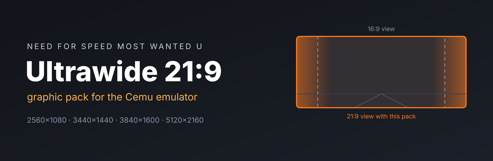
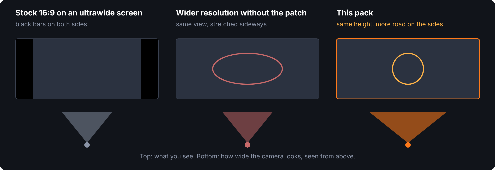
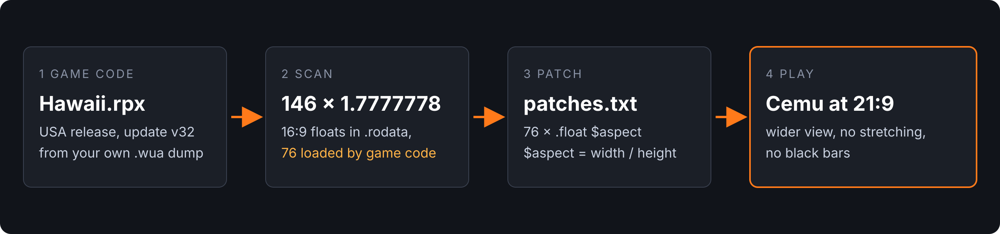

A graphic pack for the Cemu Wii U emulator. The game renders at your ultrawide resolution and the camera gets wider, so you see more road instead of black bars or a stretched picture. Setup takes about five minutes.

Tested with Cemu 2.6 on Windows 11.
In Cemu's game list the Region column should say USA and the Version column 32. Other versions are not supported yet.
2560×1080, 3440×1440, 3840×1600 or 5120×2160.
Get NFSMWU_Ultrawide.zip. It contains one folder with two text files.
In Cemu, click File → Open Cemu folder. A file explorer window opens. Go into the graphicPacks folder.
Afterwards this file has to exist: graphicPacks/NFSMWU_Ultrawide/rules.txt. If you see NFSMWU_Ultrawide/NFSMWU_Ultrawide/, move the inner folder up one level.
Close Cemu completely and open it again. It only reads graphic packs when it starts.
Open Options → Graphic packs, then Need for Speed Most Wanted U → Graphics. Untick Resolution. Both packs change the same render targets and get in each other's way.
Tick Ultrawide 21:9. The preset list appears on the right. Pick the one that matches your monitor (see the table below).
Start the game and press Alt + Enter for fullscreen.
| Your monitor | Preset | $aspect |
|---|---|---|
| 2560×1080 (most 29" and 34" ultrawides) | 2560x1080 (21:9) | 2.3703704 |
| 3440×1440 (34" WQHD ultrawide) | 3440x1440 (21:9) | 2.3888889 |
| 3840×1600 (37.5" and 38") | 3840x1600 (24:10) | 2.4 |
| 5120×2160 (40" 5K2K) | 5120x2160 (21:9) | 2.3703704 |
2560×1080 is tested. The others use the same math but have not been checked on real monitors yet.
Start the game once, close Cemu and open log.txt in the Cemu folder. You should find these two lines:
Loaded module 'hawaii' with checksum 0xfc370b5b
Applying patch group 'NFSMWU_Ultrawide'The first one means you have the right game version, the second one that the patch is active.
Check the folder path from step 3 and restart Cemu. The pack only appears for the USA release (title ID 0005000010128800). European and Japanese copies do not list it.
The resolution part works, the patch does not. Look for Applying patch group 'NFSMWU_Ultrawide' in log.txt. If it is missing, your game is not on update v32. Install the update through File → Install game title, update or DLC.
The preset does not match your monitor, or Cemu is not in fullscreen. Pick the preset with your exact resolution and press Alt + Enter.
You probably picked a preset smaller than your monitor, for example 2560x1080 on a 3440×1440 screen.
Untick Ultrawide 21:9 and tick Resolution again. To remove it completely, delete the NFSMWU_Ultrawide folder.

The game keeps its 16:9 ratio as the number 1.7777778 in its executable. 146 copies exist, 76 of them are actually loaded by the game code. The pack replaces those 76 with your monitor's ratio and renders at your resolution. Nothing in your game files is changed: Cemu applies the patch in memory while the game runs.
The two Python tools that found this patch are in the repository. One pulls the executable out of a .wua dump, the other lists the 16:9 constants and writes a patches.txt. The README has the commands.